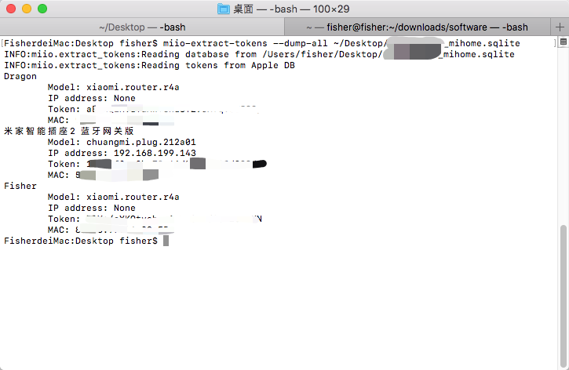

前言
因毕设选题是和物联网相关的主题，要做一个能够控制智能家居设备的微信小程序。所以就有了自由控制米家智能家居设备的需求，想要控制米家MIIO设备，就需要获取智能设备的token。但小米对获取token的方法不断进行封堵，截止这篇博客发布时，通过Android手机Root，读取旧版米家中存有token的sqlite文件已经不可行了（旧版米家APP直接闪退）；通过抓包的方式读取device_list包中的token也不行了（数据包的body已经被加密）；python-miio中discover方法也早已不行了（返回的是无效的token）。我所知道的方法中，使用tokens-extractor和读取IOS设备备份文件数据的方法还可以使用，但何时失效就不好说了
最简单的方法
最简单的方法当然是使用Xiaomi Cloud Tokens Extractor了，该脚本模拟Android米家APP的登录，以直接获取到自己账号下的智能设备信息，就能直接拿到token了。操作的流程也很简单，下载脚本运行即可，脚本需要依赖python的requests库，以下是简单的shell代码：
1 | pip3 install requests |
按照脚本中的提示输入账号密码，选择地区（一般是cn），然后看输出即可，如下图所示：
但是，这个脚本不是一直都成功的，以上图片是我在2021年2月初时获取成功后截图的。如果出现脚本不能用的情况，就要等待作者更新脚本了，在这里先对作者说声辛苦了，非常感谢！
读取IOS设备备份文件数据
这个方法相对来说比较麻烦，尤其是对于我这种手机文件多的，备份一次要好久…但是没办法，活还是得干嘛，至于小米何时再给数据文件来个加密，那就真的是麻烦了
将设备备份
首先要修改一下备份的选项，在手机摘要页面的备份中，将给iPhone备份加密选项关掉，如下图所示，然后再点击立即备份，等待备份完成即可
iBackup Viewer导出数据
点击这里可以下载iBackup Viewer，下载完后安装即可，如果这个网站打不开，也可以下载我的服务器提供的4.1760版本，安装完之后打开软件，点击自己刚刚备份的那个设备（那个壁纸可以点的），载入备份后点最后一个像分支一样的图标（Raw Files）。
在AppDomain中找到com.xiaomi.mihome并点击，此时右侧就显示米家APP备份的数据，在右侧点击Name以按照文件名排序，看到一个名为xxx_mihome.sqlite的文件后（xxx是你的小米账号ID），选择这个文件并点击右上角Export，点击Selected...，选择一个位置将这个文件导出即可，以下是操作流程图：
读取数据
读取数据需要用到python-miio包，安装一下即可：
1 | pip3 install python-miio |
接着使用miio-extract-tokens读取数据就可以获得token了：
1 | miio-extract-tokens --dump-all xxx_mihome.sqlite |

拿到token后，就能够做自己想做的事情了^_^